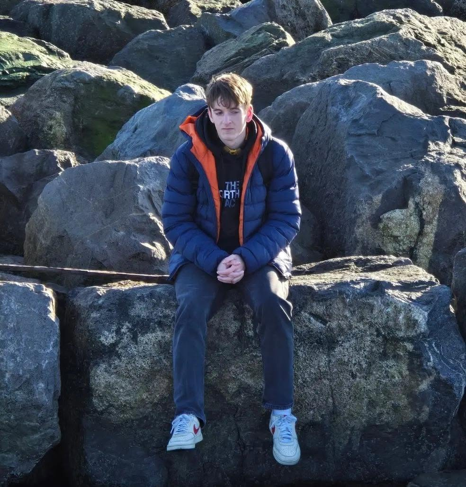

About Me
Personal Profile

Hi my name is Scott, I am a 22 years old games programmer/software
developer from Doncaster,England, I studied
Computer Science for Games Development at the University of Hull
where I graduated with a masters degree. I enjoy creating and
playing video games with more of an interest in creating games with
RPG like systems, and my favourite game is Destiny which is where I
get this interest from. Other than programming I also enjoy playing
sports mainly basketball which I played during my time at
university.
Background
My first experience came during my time at college where I studied games design, during this time I was able to get hands on experience using unreal engine evem creating a game within it, this made me want to pursue this further leading to applying to study computer science at the University of Hull. When I joined university, this is when I first started programming and had no prior knowledge in programming languages. Then throughout my 4 years at university I used multiple languages including C++, C#, cuda and Rust, and a little bit of python, with there being more of a focus on C# for my first three years, and then in my masters year more focused on C++. My course focused on games development, but I also gained knowledge in software development during it, especially during my honors stage project.
